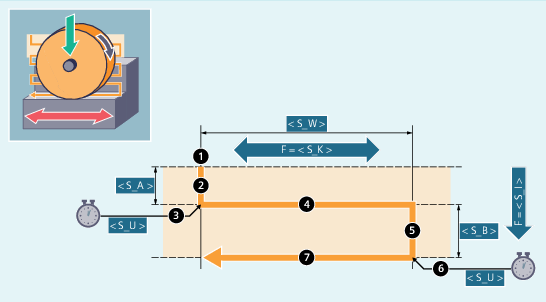

Syntax
CYCLE4071(<S_A>, <S_B>, <S_W>, <S_U>, <S_I>, <S_K>, <S_H>, <S_A1>, <S_A2>)Parameter
Nr. | Parameter | Datentyp | Bedeutung |
|---|---|---|---|
1 |
| REAL | Zustelltiefe am Anfang |
2 |
| REAL | Zustelltiefe am Ende |
3 |
| REAL | Schleifbreite |
4 |
| REAL | Ausfeuerzeit |
5 |
| REAL | Vorschub für Zustellung |
6 |
| REAL | Vorschub für Querzustellung |
7 |
| INT | Anzahl Wiederholungen |
8 |
| AXIS | Zustellachse (optional) bzw. 1. Geometrieachse |
9 |
| AXIS | Pendelachse (optional) bzw. 2. Geometrieachse |
Funktion
Der Zyklus dient zum Abarbeiten von sich wiederholenden Zustellungen. Dabei kann die Zustelltiefe am Anfang und am Ende unterschiedlich sein. Zwischen dem Zustellen erfolgt eine Tangentialbewegung.
Ablauf
| Hinweis |
Der Ablauf ist mit Einzelsatz nicht unterbrechbar. |
Beispiel
Zwei Pendelbewegung mit folgenden Zyklenparameter ausführen:
Zustelltiefe am Anfang: 0,02 mm
Zustelltiefe am Ende: 0,01 mm
Hub: 100 mm
Ausfeuerzeit: 1 s
Vorschub Zustellung: 1 mm/min
Quervorschub: 1000 mm/min
Wiederholungen: 2
Pendel- und Zustellachse: Standardgeometrieachsen
Programmcode |
|---|
| N10 T1 D1 |
| N20 CYCLE4071(0.02,0.01,100,1,1,1000,2) |
| N30 M30 |